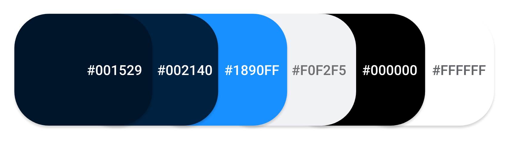

When it was time to turn our paper prototypes into digital mockups, the first thing that I started working on Web dashboard. I started creating digital mockups for other flows of Web and Android apps. My tool of choice was the Adobe XD. I jumped into XD to create Hi-Fi mockups of my proposed solutions and used XD to create a clickable prototype. I tested the prototype with 5 new individuals. Insights from the validation test led me to reiterate on one of the screens. Below are the Hi-Fi mockups of my final solutions including the results of the user testing before and after implementing my design solutions. But before created digital mockups I considered following.
Colour is a powerful tool. Choosing a colour scheme for a product is especially important for branding, as research has shown. As a designer, I optimise user experiences by choosing the right colours. This will help to ensure: Usability and legibility (readability) for the user. An emotional experience in the user. The colour Blue and vivid purple symbolises Stability, Harmony, Peace, Calm, Trust and Loyalty. Hence, Blue colour palette is fitting for the product that promotes Healthy and Hospitals. Additionally, I used grey for the text and and included a great deal of white to give a calm and clean appearance.
Today’s infographic covers the psychology behind type choices. I carefully considered font, as people have certain feelings, emotions, and associations when they see certain colours. Looking even deeper into typefaces, particular fonts convey unique things. I choose Nunito Sans is a free Google font designed by Vernon Adams and Jacques Le Bailly. It is a well-balanced sans serif typeface superfamily that seems to complement the interface. Simplicity was the leading mantra; therefore, I decided to go with just one font family.
The illustrations and icons are an important part of the design. They communicate ideas and concepts that should not and sometimes cannot be communicated with words. Furthermore, they allow consistency of the visual aesthetics that help build the users’ trust and produce moments of delight. I used Material Designs for icons and Undraw for illustrations
Tried to identify basic UI components from rough sketches, then before implementing the first component I have to set the style-guide and design language ruling these components. Bellow you will be able to find all web & mobile components used in our mockups. Ideally, all my components will be organised in a single place where both designers and developers can access. This way, I can plan and monitor the design language as it evolves over time, while developers can choose and use the right components knowing they won’t break consistency. I choose material designs as my style guide as I trying to create a mobile version I found that only material designs are more concentrated on mobile versions which is helpful for both designer as well as developers.
My Style Guide : Ant designs ( https://ant.design/docs/react/introduce )
In mail link you will be able to see all screen of individual users and their user flow. As you can see I have considered all the above, before getting into designing UI Screens.
I have used some standard transitions like None, dissolve, push left, slide left etc, I thought of using auto animation for transitions but as user will be spending lot of time on our product, he is going to fill dizziness if we use auto animation and micro interaction. So i skipped it for now.
My main target is to study Sweden health care system so that i can create a better system by understanding pain points. But due to lack of enough data, I cannot further continue my research. So in order to gain some domain knowledge i did some SME Interviewee’s and user observation. I tried to understand pain point and ideated some solutions, but due to certain issues I couldn’t spend much time on the UI part. So far i have done by best, but with more iteration and time i would have done better.